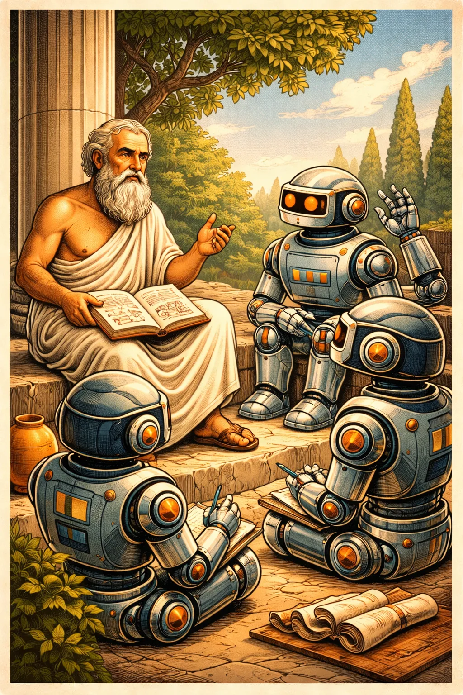
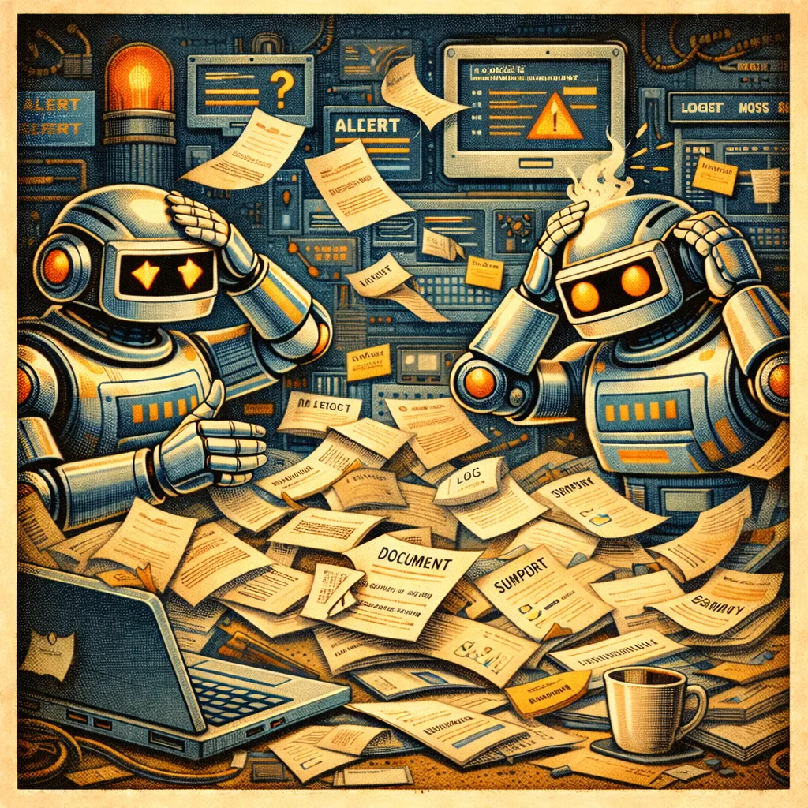
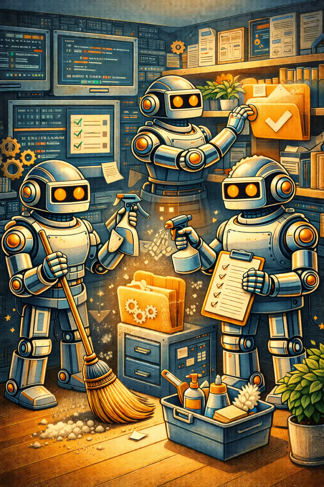
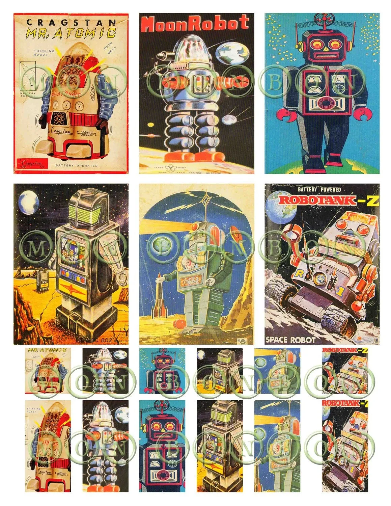

Coding Agents are Terrible!
By default – they have lots of failure modes – they are just regurgitating the internet.
They are trained on LOTS of terrible code AND on some very excellent code.
Your chances of getting the terrible code are relative to its proportionality in the training set.
Guess how common terrible code is on the internet?

Coding Agents are Amazing!
They can take the best code on the internet and make it available instantly AND they can reason over it, with your help.
Your job as an engineer is to help them converge on the good code.

But it produces garbage! How do I get to Quality?
- Setting High Standards
- Encoding Best Practices
- Recursion, Reflection, and Repetition
- Outside-in-testing
Laying a Foundation
Write down your development philosophy – e.g.:
- Ruthless Simplicity
- Small, modular bricks that fit together
- Zero BS: No stubs, no placeholders, no faked data, no faked APIs, no TODOs
- Core e2e journeys and data flows early
- Iterative implementation

Tip Avoid Context Poisoning!
Point-in-time documents and unrelated logs, reports, summaries etc. all distract your agents.

Build lots of Guardrails
Modern dev has dozens of tools to keep things working smoothly.
Require pre-commit: linting, formatting, type-safety, secrets prevention, build/testing, and coverage.
In CI:
- Code Coverage
- Secrets Scanning
- Build/Test
- Integration Testing
- Dependency management
- Repo Hygiene and Maintenance
GitHub Agentic Workflows!
Agents can continuously clean, improve, and curate your repo.
GH-AW lets you build natural language driven agents that can perform a massive array of tasks.
E.g.: Repo Guardian – prevents context poisoning by keeping point-in-time docs out of the repo.
Other use cases: docs maintenance, issue triage and labelling, PR hygiene, etc.

Frame quality improvement as a continuous iterative goal
- Have dialogues with the coding assistant and with the repo itself about how you might add new procedures
- Delegating goal pursuit changes how you think about solving the problem
Weekly Practice: How else can agents help in my repo?

How do non-AI dev teams ensure quality?
Encode your development workflows into the AI work.
Use Subagents as your virtual team:
- Spec reviews, code research, eval options, build some prototypes
- Refine the prototypes, scope an e2e
- Test-Driven Dev: write failing tests for everything
- Iterate to make the tests pass
- Refactor/Test/Refactor in a loop
- Code Review
- Integration Testing
- …and probably many more steps specific to your team

Tip
Always watch for the model skipping your instructions – ask it repeatedly if it followed the workflow, used the correct tool, etc.

Moving from Guidance to Code
- Run deterministic workflows
- Turn small loops into tools or custom agents that use tools
- Compose loops into workflows that run in code
- Turn your NL documented workflow into a deterministically evaluated workflow using these loops and tools
Build your QA Team: Outside-in Agentic Testing
Define the user and data flows and build agents to exercise them:
- Use your spec or your UI design to derive e2e user flows
- Build agents that simply use your product – the same ways that a user would
- Build Skills that know how to invoke those agents
- Build outside-in-testing into your workflow at multiple stages

Convergence: steering the model to the good code
Have it consider every piece from multiple angles. You must drive multiple quality loops from different points of view:
- Did the agent follow the required workflows?
- Does it match the spec?
- Is the test correct / testing the right things?
- Are the docs in sync with the spec and code?
- Is it adhering to your philosophy?
- Did it pass pre-commit and CI?
Look for: secure sources/sinks, type-safety, poor exception handling, silent "fallbacks", stubs, TODOs, faked data, mocks outside tests, fragile regexes, hard-coded values…
Must do MULTIPLE passes from MULTIPLE subagents – layers and layers – until you converge on zero quality discoveries.
Build Context Specific to your Repo and Tech
The opposite of context poisoning – use Agents.md files or copilot-instructions.md files at strategic locations in the codebase to help build the correct context.
Build Skills that are specific to things you are working with and keep them in your repo or in a plugin you use.
This is especially important for internal tools/idioms/tech that is outside the training set (e.g.: GQL).
Tip Before finishing, stop and ask:
- "How else would you improve this PR?"
- "What else could we do to improve quality / resilience / ease of use…?"
- "How could we examine this code even more thoroughly?"